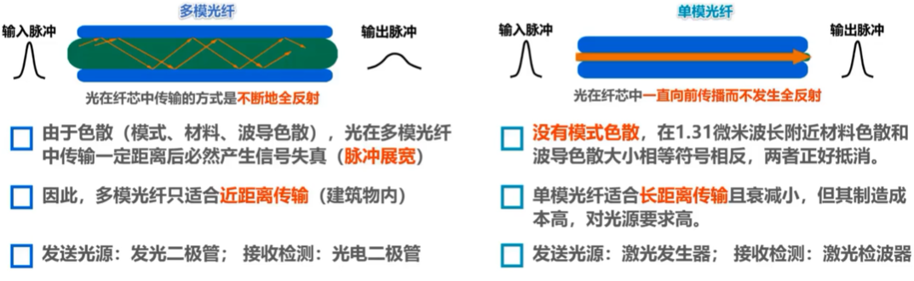
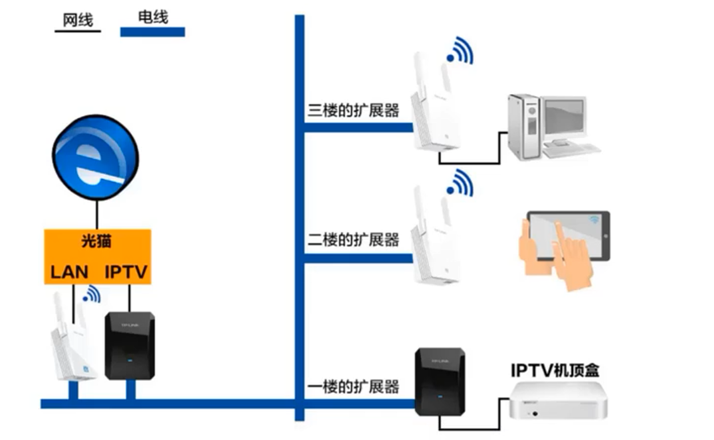
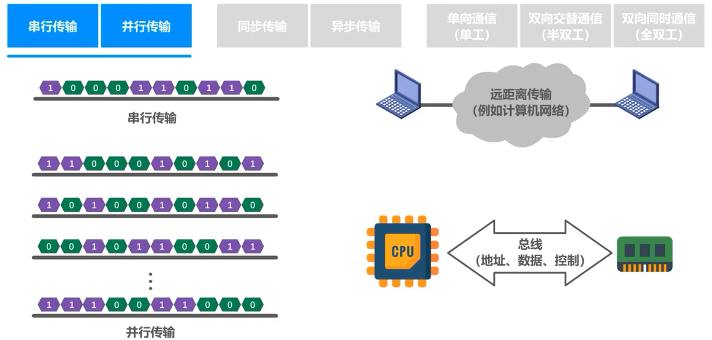

物理层
物理层解决在各种传输媒体上传输比特0和1的问题，进而给数据链路层提供透明传输比特流的服务。“透明”是指数据链路层看不见，无需看见物理层究竟使用的是什么方法来传输比特0和1的。它只管享受物理层提供的比特流传输服务即可。物理层为了解决在各种传输媒体上传输比特0和1的问题，主要有四个任务：机械特性、电器特性、功能特性、过程特性。
物理层
基本概念
物理层解决在各种传输媒体上传输比特0和1的问题，进而给数据链路层提供透明传输比特流的服务。“透明”是指数据链路层看不见，无需看见物理层究竟使用的是什么方法来传输比特0和1的。它只管享受物理层提供的比特流传输服务即可。
物理层为了解决在各种传输媒体上传输比特0和1的问题，主要有四个任务：
机械特性：指明接口所用接线器的形状和尺寸、引脚数目和排列、固定和锁定装置。
电器特性：指明在接口电缆的各条线上出现的电压范围。
功能特性：指明某条线上出现的某一电平的电压表示何种意义。
过程特性：指明对于不同功能的各种可能事件的出现顺序。
传输媒体
传输媒体不属于计算机网络体系结构的任何一层，如果非要将其添加到体系结构中，那么归类为物理层之下的传输媒体。
导引型传输媒体
电磁波被导引沿着固体媒体传播。
同轴电缆
双绞线
光纤

电力线

应用电力线传输信号的实例最早是电力线电环。目前，如果要构建家庭高性能局域网，采用电力线作为传输媒体是不能满足要求的。对于装修时没有进行网络布线的家庭，可以采用该方式。对于一些采用独立房间进行办公的企业来说，每间办公室电脑数量不多，而又不希望跨办公室进行布线，也可采取该方式。每个办公室只需根据需求，在电源插座上插入一个或多个电力猫即可。
非导引传输媒体
自由空间
无线电波、微波、红外线、可见光
无线电波中的低频和中频频段，主要利用地面波进行传输；而高频和甚高频，主要靠电离层的反射。
微波
微波通信在数据通信中占有重要地位。微波在空间主要是直线传播，由于微波会穿透电离层而进入宇宙空间，因此它不能经过电离层的反射传播到地面上很远的地方。
传统微波通信两种方式：地面微波接力通信和卫星通信。
因为地球表面是曲面，因此其传播距离受到限制，一般只有公里左右，但若采用100米高的天线塔，则传播距离可增大到100公里。为实现远距离通信，必须在一条微波通信信道的两个终端之间建立若干个中继站。中继站把前一站送来的信号经过放大后再发送到下一站，故称为“接力”。
常用的卫星通信方法是在地球站之间，利用位于约3万6千公里高空的人造同步地球卫星，作为中继器的一种微波接力通信，其最大特点是通信距离远。传播时延比较大，一般在250~300ms之间。除同步卫星外，低轨道卫星通信系统已开始在空间部署，并构成了空间告诉链路。
红外线
很多智能手机还带有红外接口，以方便用户对电视、空调等家用电器进行红外遥控。
传输方式
串行传输/并行传输

远距离传输采用串行传输；CPU与内存之间，通过总线进行数据传输。常见的数据总线宽度有8位、16位、32位和64位。
同步传输/ 异步传输
采用同步传输方式数据块以稳定的比特流的形式传输，字节之间没有间隔。接收端在每个比特信号的中间时刻进行检测，以判别接收到的是比特0还是比特1。由于不同设备的时钟频率存在一定差异，不可能做到完全相同，在传输大量数据的过程中，所产生的判别时刻的累计误差会导致接收端对比特信号的判别错位。因此需要采取方法使收发双方的时钟保持同步。
单向/双向交替/双向同时通信
编码与调制
概念
在计算机网络中，计算机需要处理和传输用户的文字，图片，音频和视频，它们可以统称为消息。数据是运送消息的实体，计算机只能处理二进制数据，也就是比特0和比特1，变换成相应的电信号发送到网线。也就是信号是数据的电磁表现，由信源发出的原始电信号称为基带信号。
基带信号可分为两类，数字基带信号（计算机内部CPU和内存之间传输的信号）和模拟基带信号（麦克风收到声音后产生的音频信号）。信号需要在信道中进行传输，信道可分为数字信道和模拟信道两种。在不改变信号性质的前提下，仅对数字基带信号的波形进行变换，称为编码。编码后产生的信号仍未数字信号，可以在数字信道中传输。例如，以太网使用曼彻斯特编码等。把数字基带信号的频率范围，搬移到较高的频段，并转换为模拟信号，称为调制。调制后产生的信号是模拟信号，可以在模拟信道中传输。例如，WIFI使用补码键控、直接序列扩频、正交频分复用等调制方法。
对于模拟基带信号的处理，也有编码和调制两种方法，对模拟基带信号进行编码的典型应用是对音频信号进行编码的脉码调制PCM，也就是将模拟音频信号，通过采样、量化、编码三个步骤进行数字化。对模拟信号进行调制的典型应用是将语音数据加载到模拟的载波信号中传输，例如传统的电话，另一个是频分复用FDM技术，可以充分利用带宽资源。
在使用时间域的波形表示数字信号时，代表不同离散数值的基本波形称为码元。码元就是构成信号的一段波形。
传输媒体和信道的关系：严格来说传输媒体和信道不能直接划等号，对于单工传输，传输媒体中只包含一个信道。要么是发送信道，要么是接收信道。而对于半双工和全双工传输，传输媒体中要包含两个信道。一个是发送信道，另一个是接收信道。如果使用信道复用技术，一条传输媒体还可以包含多个信道。在计算机网络中，常见的是将数字基带信号通过编码或调制的方法在相应信道进行传输。
常用编码
图中采用不归零编码产生的该比特流的相应信号。正电平表示比特1，负电平表示0。所谓不归零，就是指在整个码元时间内，电平不会出现零电平。该编码存在同步问题，因此计算机网络中不采用该编码。
归零编码，每个码元传输结束后信号都要“归零”。优点自同步，但编码效率低。
差分曼彻斯特编码比曼彻斯特编码变化少，更适合较高的传输速率。
基本调制方法

使用基本调制方法，1个码元只能包含1个比特信息。如何能使1个码元包含更多的比特呢？
混合调制举例 - 正交振幅调制QAM
信道的极限容量
概念
信号在传输过程中会收到各种因素的影响。当失真不严重时，在输出端还可根据已失真的波形还原出发送的码元。但当失真严重时，在输出端就很难判断这个信号在什么时候是1和什么时候是0。信号波形失去了码元之间的清晰界限，这种现象叫做码间串扰。
练习